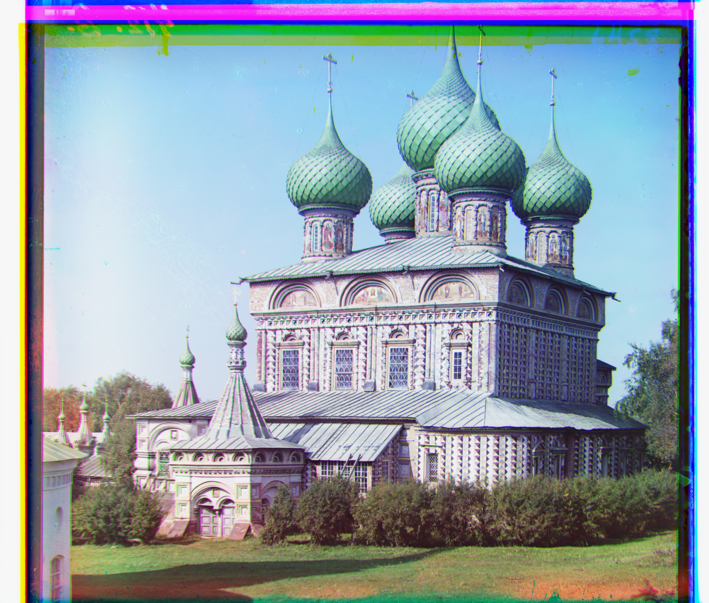
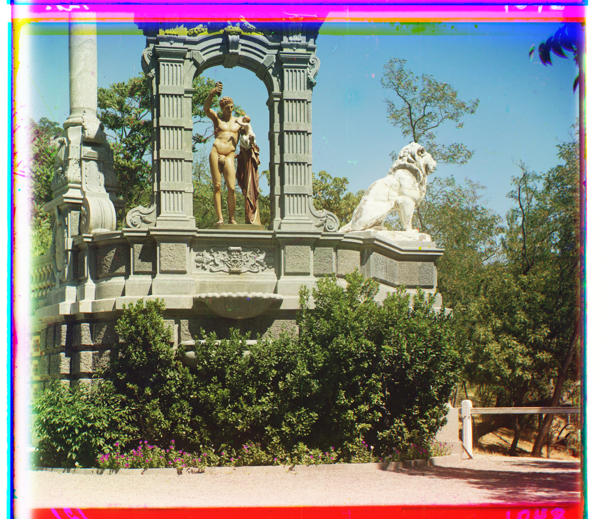

CS180 Project 1
Images of the Russian Empire: Colorizing the Prokudin-Gorskii Photo Collection
Kevin Yee
Overview
This project (in our quest to beome friends with each and every single pixel on the screen) takes an image, splits it in three, and performes alignment on the three color channels of the image (B G R) to produce a color image.
Methods
So the lion's share of this project revolves around how to align the images in an efficient manner. In order to perform alignment, I decided to use the simplest method of comparison (to quote the spec) "the L2 norm also known as the Euclidean Distance which is simply sqrt(sum(sum((image1-image2).^2)))". This is shown quite simply in my code as:
score = np.sum((base_channel_cropped - shifted_channel_cropped) ** 2)
Where base_channel_cropped and shifted_channel_cropped are the channels that are being aligned. The square root of the function
was not taken as it's not technically required, as all I'm doing is comparing which value is greater, and the root of a larger number is larger than the root of a smaller number citation needed
Of course, there is a good amount of work that must be done to actually align the image in the first place, which is essentially done by iterating over every single possible alignment, or to quote directly: "to exhaustively search over a window of possible displacements (say [-15,15] pixels)". This is quite expensive over large images though, so an image pyramid was used, where it basically takes the image, and downscales it to be half the size it was originally. After finding some optimal offset on the downsized image, the lower levels return the optiimal offset that it found, which upper levels then use as a starting point and begin their search once more over a more refined (smaller) search range.
Essentially, what the pyramid does is:
With this, the images can be aligned and stacked to be in full color.
Problems
One of the main problems I had was alignment, specifically having things be (mostly) aligned, with some constant offset due to the borders. After much mashing my head into a wall, I re-read the spec, and took the advice to "pre-crop" some of the images before actually running the L2 norm on them so that the norm wouldn't be run on the bordering things, such that it wouldn't rate the borders very highly and misalign them.
Results:
Image: cathedral.jpg
Green Offset (x, y): (5, 2) Red Offset (x, y): (12, 3)
Image: church.tif
Green Offset (x, y): (25, 4) Red Offset (x, y): (58, -4)
Image: emir.tif

Green Offset (x, y): (49, 24) Red Offset (x, y): (107, 40)
Image: harvesters.tif
Green Offset (x, y): (60, 17) Red Offset (x, y): (124, 14)
Image: icon.jpg
Green Offset (x, y): (42, 17) Red Offset (x, y): (90, 23)
Image: lady.tif
Green Offset (x, y): (56, 9) Red Offset (x, y): (120, 13)
Image: melons.tif
Green Offset (x, y): (80, 10) Red Offset (x, y): (177, 13)
Image: monastery.jpg

Green Offset (x, y): (-3, 2) Red Offset (x, y): (3, 2)
Image: onion_church.tif
Green Offset (x, y): (51, 26) Red Offset (x, y): (107, 35)
Image: sculpture.tif
Green Offset (x, y): (33, -11) Red Offset (x, y): (140, -26)
Image: self_portrait.tif
Green Offset (x, y): (78, 29) Red Offset (x, y): (176, 37)
Image: three_generations.tif
Green Offset (x, y): (54, 12) Red Offset (x, y): (111, 9)
Image: tobolsk.jpg
Green Offset (x, y): (3, 3) Red Offset (x, y): (6, 3)
Image: train.tif
Green Offset (x, y): (41, 2) Red Offset (x, y): (85, 29)
Image: Sirenʹ.tif

Green Offset (x, y): (49, -6) Red Offset (x, y): (96, -24)
Image: Cheremukha.tif
Green Offset (x, y): (26, 18) Red Offset (x, y): (122, 34)
Image: V Malorossīi.tif

Green Offset (x, y): (-30, -93) Red Offset (x, y): (22, -82)